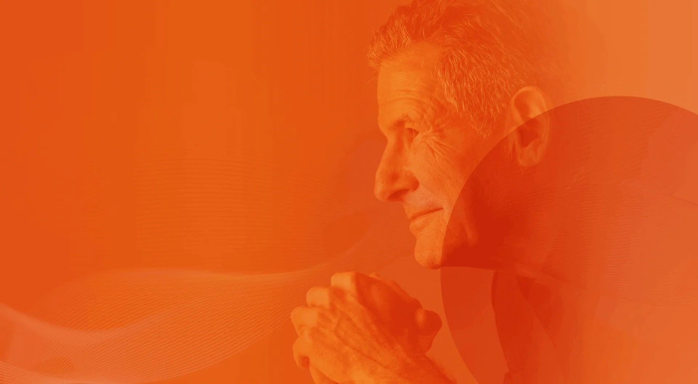
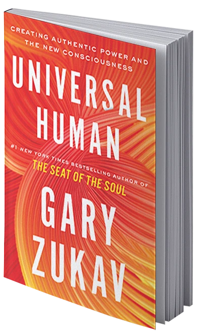
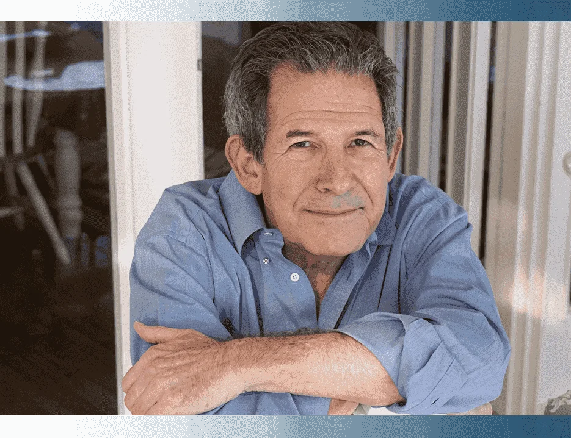
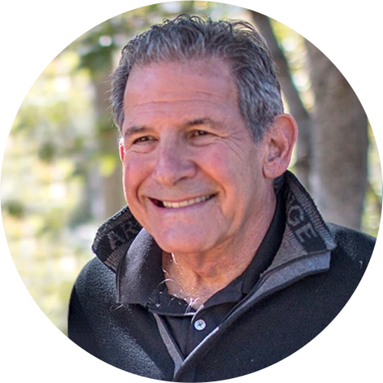
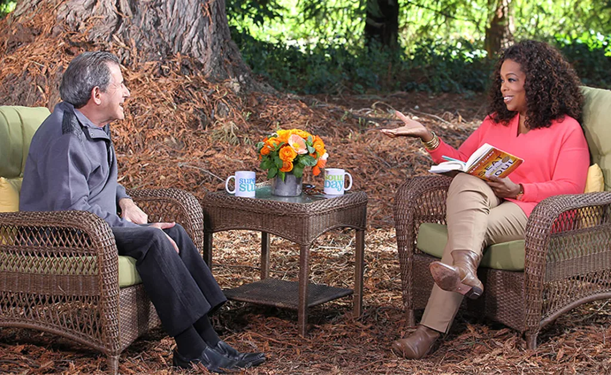

Gary Zukav, #1 New York Times bestselling author of The Seat of the Soul, has done it again! His amazing new book, Universal Human, is about a new era of human evolution. This book offers a vision of what a world based on love could be, and an invitation to begin bringing such a world into being now. It is a book that you will never forget.

Explore your new consciousness and use it.
Gary Zukav
For years Gary Zukav has conveyed the most complex insights in a language all can understand. Over and over, he challenges us to see the depth of our potential in the world…and act on that awareness. His celebrated #1 New York Times bestselling The Seat of the Soul (1989) led the way to seeing the alignment of the personality and the soul as the fulfillment of life, and captured the imagination of millions.


Gary Zukav's gentle manner captivated millions of viewers during his 35 appearances on The Oprah Winfrey Show, and his books have sold six million copies and been published in 32 languages.
He graduated from Harvard and was a US Army Special Forces (Green Beret) Officer with Vietnam service before writing his first book.
Expect to be surprised and delighted and fulfilled by your own creative capacity and abilities and to enjoy yourself.